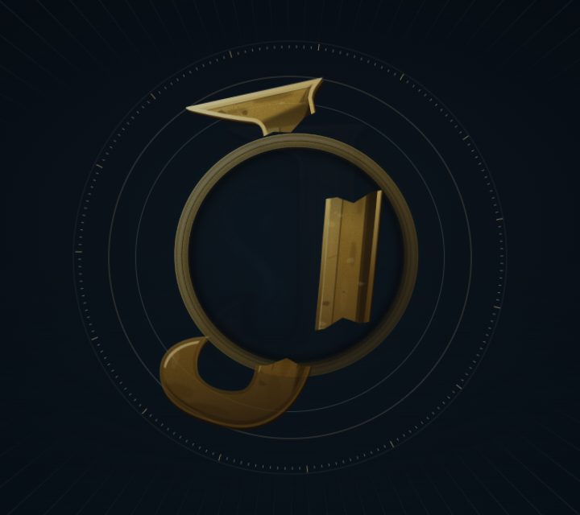
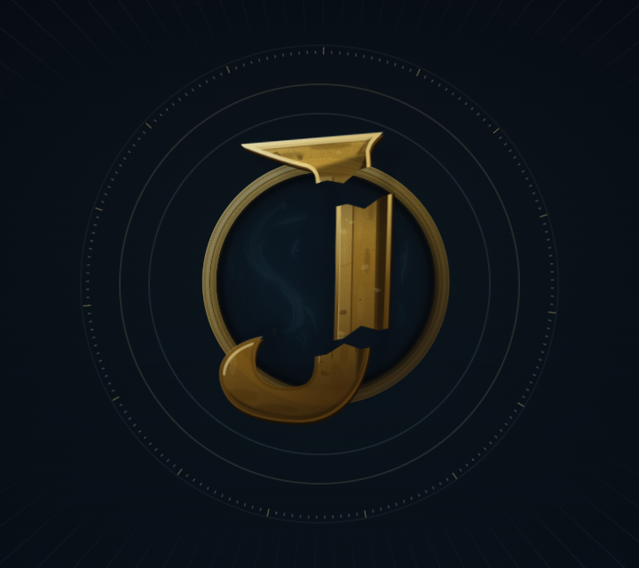
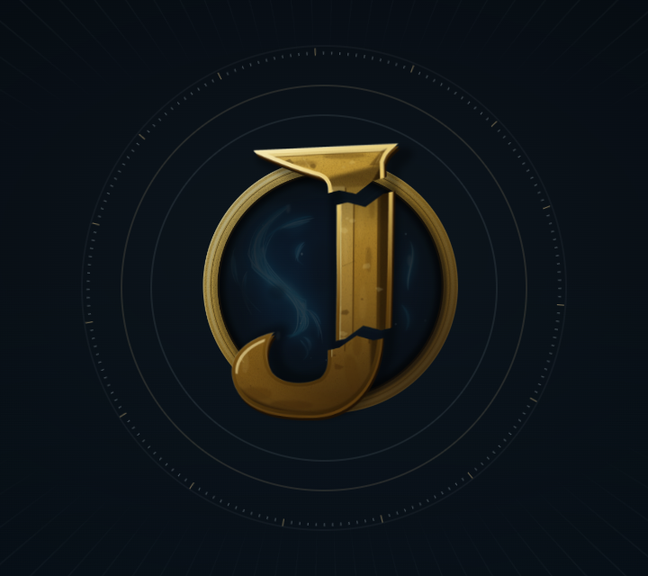
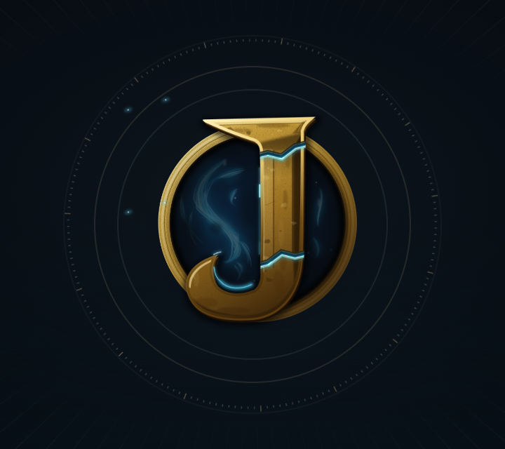
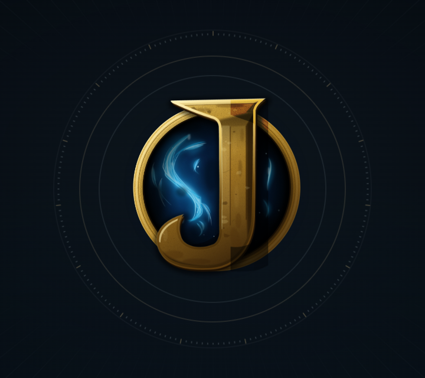
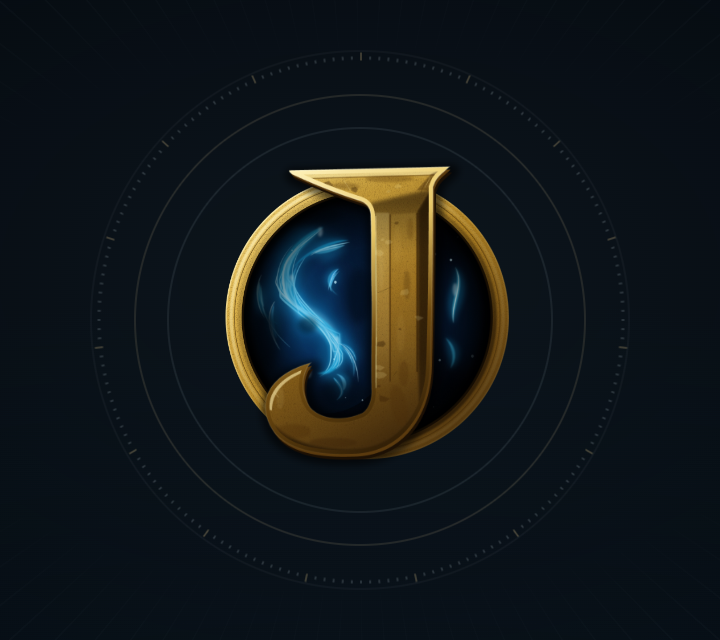

01 · Broken / Dormant
Figma `3714:2` · Chrome capture at 0.651s
Figma key pose

Runtime · 0.651s

Each row pairs one authored Figma key pose with the corresponding frame from the real 1920×1080 Chrome run. The opening source remains the approved dark radial environment; these comparison crops focus on the central mark and its surrounding mechanism.
Figma `3714:2` · Chrome capture at 0.651s

Figma `3714:530` · Chrome capture at 1.001s


Figma `3714:1058` · Chrome capture at 1.418s


Figma `3714:1575` · Chrome capture at 2.586s


Figma `3714:2092` · Chrome capture at 3.103s

Figma `3714:2609` · Chrome capture at 3.803s


Figma `3714:3126` · Chrome capture at 4.154s


Chrome review findings: the three fragments remain recognizable through approach; the authored seam position lights after seating; the blue portal/plasma, gold ring, and contact relationship build behind the J and remain together at settle. No square matte was visible in the corrected activation frame. The final identity remains present as the opening fades into Home. The full screen record, 1440×720 capture, 390×844 captures, and reduced-motion final frame are retained beside the QA report.
Source evidence: Figma storyboard `3713:4`, editable rig `3712:2`, canonical exports `3735:2` and `3735:516`, and implementation notes `3737:2` / `3737:37`.